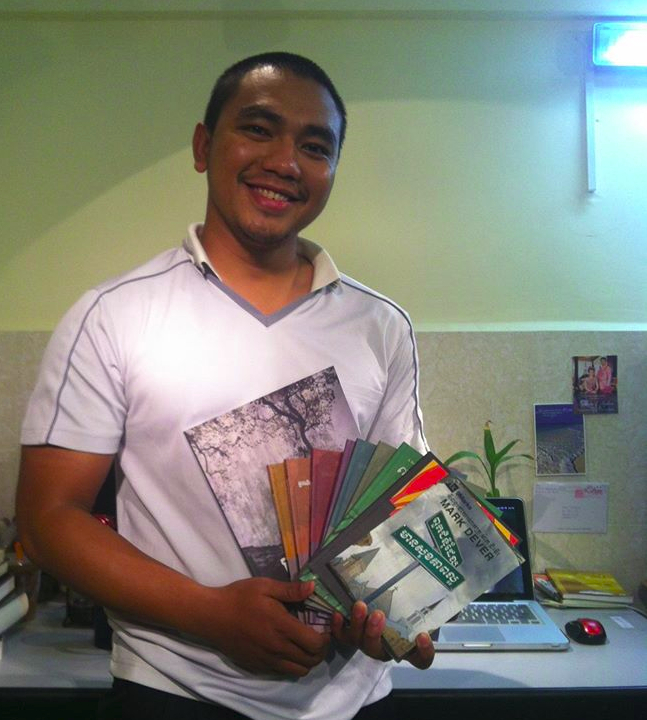
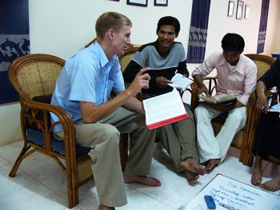

 Bora with the Biblical resources he helped translate
During my time in college, I had the opportunity to be exposed to much more of the world, often through missionaries or international students.
One such international student was Bora, a close friend from college who grew up as an orphan in Cambodia.
However, rather than being focused on his own past and difficulties, Bora was always most concerned with the people who were back in Cambodia. Bora, would always tell me of the great need that the country has both spiritually and physically, which was in a large part caused by the Khmer Rouge in the 1970s.
Part of the problem in the Cambodian church specifically is that political and economic instability has made it difficult to train up godly men who are adequately equipped to preach and teach.
Even worse, all too often those who are training the pastors are equipping them for social work at the neglect of pastoral work. While economic and health issues should not and cannot be neglected, they also cannot be allowed to overshadow the deep spiritual need that the country has as well (Acts 6:1-4; 1 Timothy 4:13-16).
 Action Cambodia’s team leader, Nathan Wells, teaching some young men. Because of this, Bora and the team that he is now working with (Action Cambodia) are concentrating their efforts towards pastoral training and leadership development, a work that I am especially passionate about and that I believe God has equipped me for.
Moreover, Cambodia seems like an especially strategic location since:
- Cambodia is open to missionaries (which allows for more opportunities);
- We do not know how long Cambodia will be open to missionaries, which makes it that much more urgent to train national pastors while we can;
- Cambodia is surrounded by nations closed to the West, but potentially open to Cambodians, if Cambodia gets to the point where it could send out its own missionaries.
Therefore, please pray:
- That I would have wisdom in every stage, from the planning process to the trip itself.
- For the missionaries and local churches in Cambodia, that they would be continually transformed by the renewing of their minds.